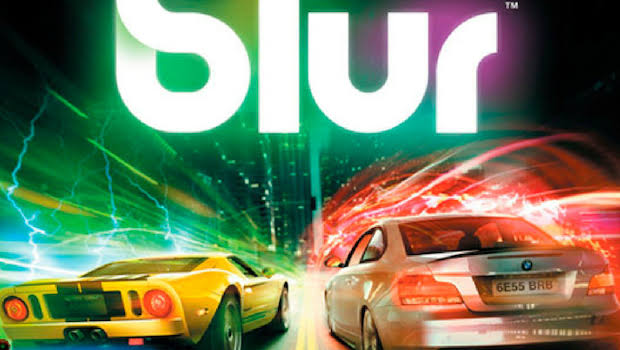
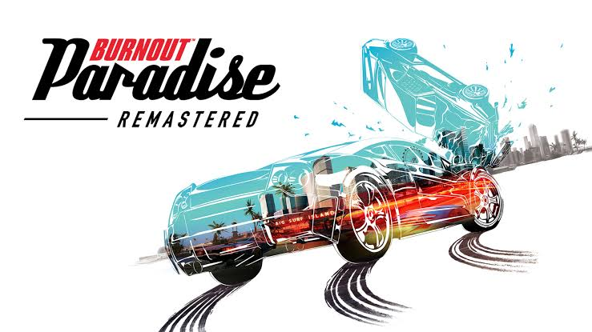
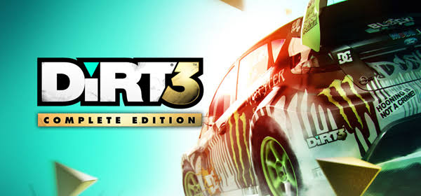
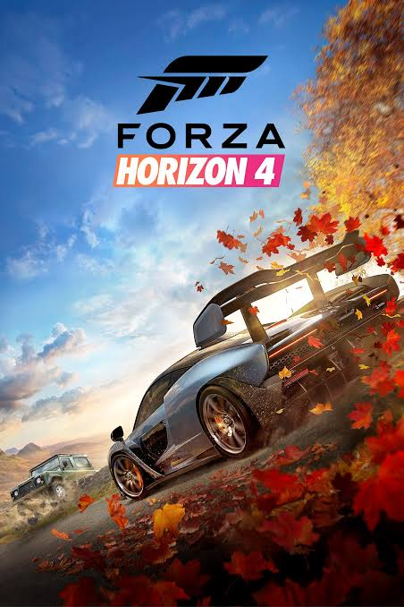

top mejores juegos de autos
Eres un amante de los videojuegos y al mismo tiempo de los autos pues estas de suerte ya que a continuación te mostrare los mejores juegos de autos que devez de tener en tu consola de videojuegos
blur

te gustan las carreras y a la vez te gusta molestar a tus amigos chocandolos pues blur es un juego qué esta diseñado para eso mismo competir contra tus amigos y usar complementos para poder destruir sus autos al mismo tiempo
midnightclub los angeles
De los mejores juegos Aparecen los nombres reales de cada coche, los modelos son identicos al real, las gráficas son buenísimas, las opciones de tunning son muy variadas, hay un monton de partes que se pueden modificar en cada vehículo, tienen modelos muy iconicos como el corvette, camaro, y menos clásicos como cadillac cien, etc y hasta los soundtracks son buenos
Burnout

Burnout es el videojuego de carreras y destrucción más conocido, repleto de acción, trucos asombrosos, colisiones y vehículos revolucionados. Colisiona contra todo a tu paso y observa cada detalle con la espectacular cámara lenta. Destroza a la competencia en Burnout Paradise, ganador al mejor juego de carreras de GameSpot en 2008. Disfruta trucos increíbles y destrúyelo todo en una de las mejores series de juegos de carreras arcade de la historia.
Dirt3

Dirt3 es uno de los mejores juegos recomendados si eres amantede los derrapes y carreas el tercer lansamiento de esta saga dicen que es una de las mejore por sus graficos y su modo de juego
Forza Horizon4

Por primera vez en el género de carreras y manejo, disfruta de estaciones dinámicas en un mundo abierto compartido. Explora escenas hermosas, colecciona más de 450 autos y conviértete en superestrella Horizon en la Gran Bretaña histórica.*